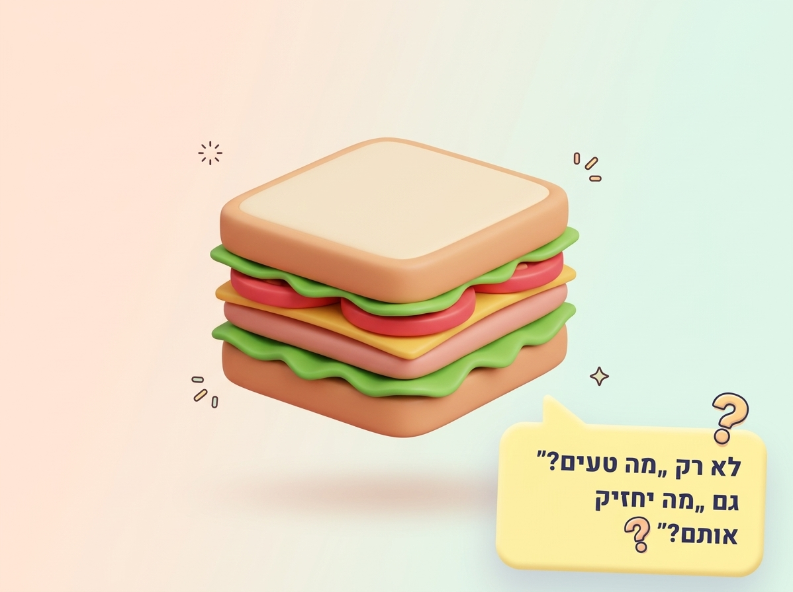
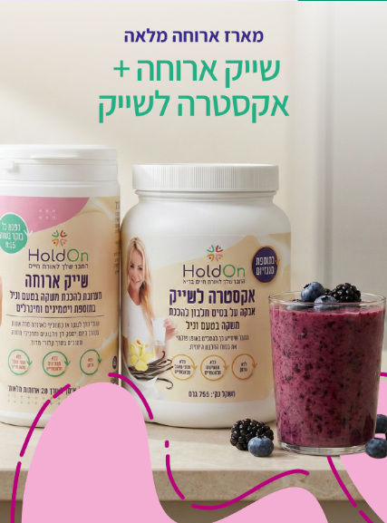
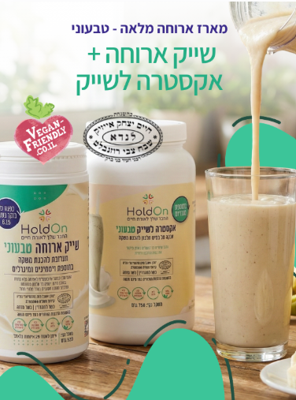

רשימת כריכים בריאים ומזינים שיעזרו לילדים להגיע לשיעור עם אנרגיה יציבה - בלי "רכבת הרים" של רעב, עייפות וחשקים.
רשימת הכריכים שליפחמימות הן מקור אנרגיה חשוב. אבל כשהארוחה בנויה בעיקר מסוכר או מקמח לבן, האנרגיה עשויה לעלות מהר – ולא תמיד להחזיק לאורך זמן. שילוב של פחמימה איכותית עם חלבון, ירקות ושומן טוב מאט את העיכול ותומך בשחרור מתוך יותר של גלוקוז לדם.
לחמנייה לבנה עם ממרח מתוק יכולה לתת "בוסט" מהיר – אבל לעיתים השובע קצר יותר והרצון לנשנש חוזר מוקדם.
לחם מלא יחד עם מקור חלבון, ירקות וקצת שומן איכותי יוצר ארוחה שלמה יותר, משביעה יותר ומאוזנת יותר.
מחקרים מצביעים על כך שאכילת ארוחת בוקר, לעומת דילוג עליה, עשויה לתמוך בחלק ממדדי הקשב והקוגניציה במהלך הבוקר.
כדי לשמור על רצף של אנרגיה ושובע, חשוב שגם ארוחת הביניים בבית הספר תהיה מאוזנת ולא תתבסס רק על פחמימה או ממרח מתוק.
אחרי ארוחה שמבוססת בעיקר על סוכר או פחמימות שמתעכלות מהר, הגלוקוז נכנס לדם במהירות. הגוף מפריש אינסולין כדי להעביר את הגלוקוז לתאים, ולאחר השיא עלולה להגיע ירידה מהירה יחסית. אצל חלק מהילדים התנודות האלה מורגשות היטב במהלך השיעור.
מאפה, לחם לבן או ממרח מתוק מתעכלים במהירות ועלולים להעלות את רמת הסוכר בדם בבת אחת. לרגע יכולה להיות תחושה של הרבה אנרגיה.
האינסולין מסייע להכניס את הגלוקוז מהדם אל התאים. שמקור האנרגיה היה מהיר וקצר, גם תחושת השובע עלולה להיעלם מוקדם.
רעב, עייפות, חוסר שקט, עצבנות ורצון למשהו מתוק יכולים להקשות על הילד לשבת, להתמיד במשימה ולהחזיק קשב לאורך זמן.
תנודות ברמות הסוכר אינן גורמות להפרעת קשב וריכוז, אבל התחושות שהן עלולות ליצור – עייפות, רעב, חוסר שקט ועצבנות – יכולות להיראות כמו קושי בקשב או להקשות עוד יותר על ילד שכבר מתמודד עם קשיי קשב. מחקרים מצביעים על קשר אפשרי בין פרופיל סוכר יציב יותר לאורך הבוקר לבין ביצועים טובים יותר בחלק ממדדי הקשב והקוגניציה, אם כי התגובה משתנה מילד לילד.
זה שילוב שנותן לילד בסיס תזונתי טוב יותר לאנרגיה, לשובע ולריכוז לאורך יום הלימודים.
את השייק מכינים לפי הוראות האריזה ובהתאם לגיל, לצרכים ולהעדפות של הילד.

אפשר לסנן לפי סוג, לבחור כמה מועדפים ולצור רוטציה שבועית. כמויות החלבון הן הערכות ועשויות להשתנות לפי המוצר וגודל המנה.
לחם מלא, גבינה צפתית 5%, רבע אבוקדו, ביצה קשה, חסה ועגבניית שרי.
לחם מלא, כף טחינה, ביצה קשה, חציל קלוי, עגבנייה, חסה ומלפפון חמוץ.
לחם מלא, גבינת שמנת 5% או פסטו, פלפל או חציל קלוי, גבינה צפתית ועלי רוקט.
לחם מלא, מריחה של גבינה לבנה 5%, פרוסת גבינה צהובה 9%, חמאה, עגבנייה ומלפפון.
לחם מלא, אבוקדו רך, גבינה צפתית, ביצה קשה, חסה ועגבנייה.
לחם מלא, מריחה קלה של מיונז או חרדל, חזה עוף או פסטרמה מחזה בקר, חסה, עגבנייה ומלפפון.
לחם מלא, גבינת שמנת 5%, חביתה מביצה אחת או שתים, חסה ועגבנייה.
לחם מלא, חצי קופסת טונה עם פלפל אדום ובצל, מריחה דקה של מיונז, מלפפון חמוץ ועגבנייה.
לחם מלא, גבינת שמנת 5%, פרוסות דקות של סלמון, מלפפון ועלי רוקט.
לחם מלא, סלט מביצה וחצי, כפית מיונז ובצל ירוק, לצד מלפפון, עגבנייה וחסה.
לחם מלא, טחינה, קציצות עדשים ביתיות, פרוסות קישואים ופלפלים קלויים.
לחם מלא, חצי קופסת טונה, מריחה דקה של מיונז, חסה, עגבנייה וחמוצים.
לחם מלא, מריחה קלה של פסטו, גבינת חמד 5%, עגבנייה וחסה.
לחם מלא, חציל קלוי, גבינת חמד 5%, עלי רוקט, עגבנייה ובצל סגול.
לחם מלא, שתי כפות קוטג' 5% ופרוסות דקות של פלפלים צבעוניים.
לחם מלא, שכבה דקה של חמאת בוטנים טבעית וחצי בננה פרוסה.
לחצו וקבלו רעיון אקראי מתוך הרשימה.

סקירה על ארוחת בוקר וקוגניציה בילדים ובני נוער • סקירה על עומס גליקמי וביצועים קוגניטיביים • הסבר על פחמימות, סיבים ואיזון גלוקוז
רעיונות הכריכים וכמויות החלבון מבוססים על מדריך Fit-K שצורף לעמוד, עם התאמות ניסוח וסידור.